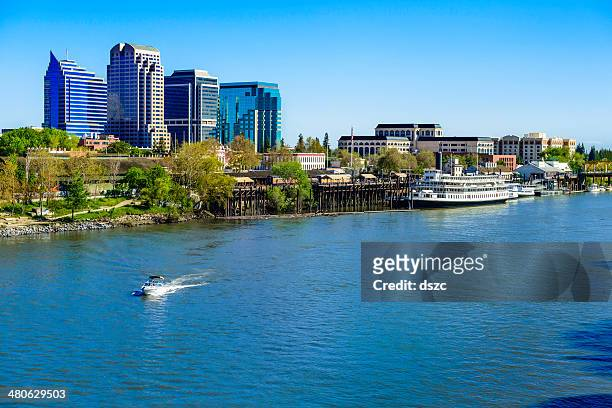
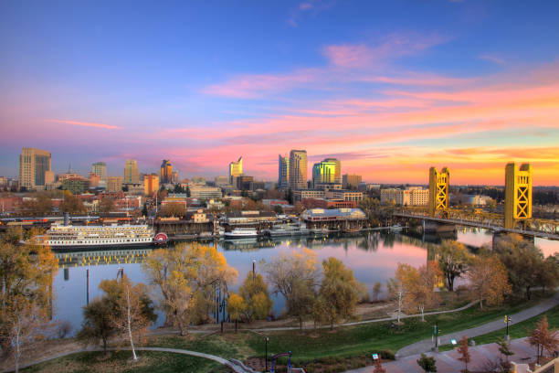
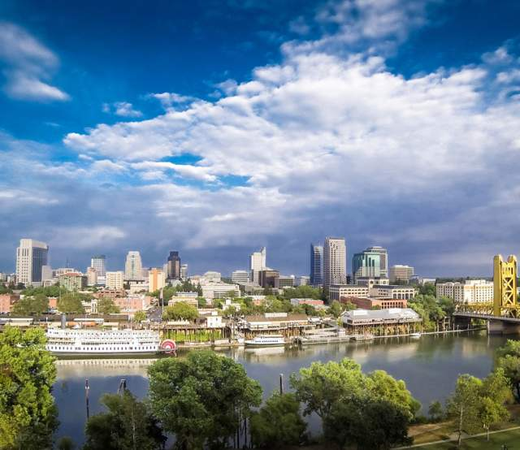
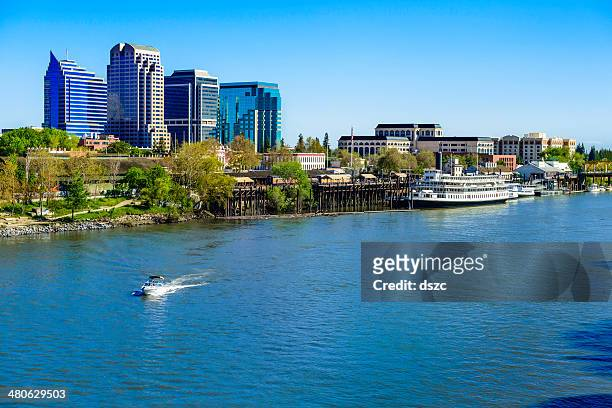
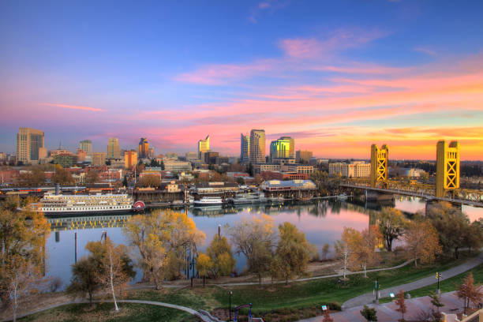
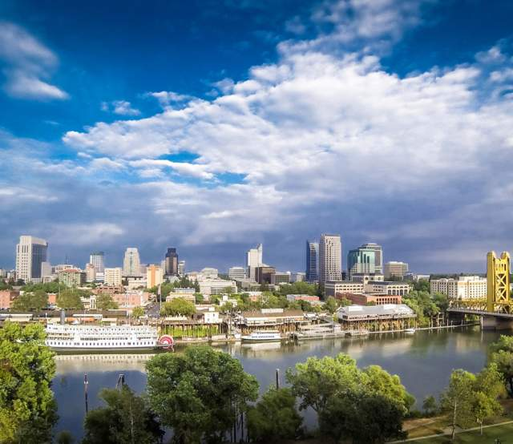

About Sacramento
Sacramento, the capital city of California, is known for its vibrant history, beautiful parks, and dynamic cultural scene. From the iconic State Capitol building to the historic Old Sacramento Waterfront, the city offers a rich tapestry of experiences for all who visit.
 





Top Attractions
- California State Capitol Museum
- Old Sacramento State Historic Park
- Sacramento Zoo
- Crocker Art Museum
Facts
- City Population: 532,101
- Incorporated: 1894
- Region: Northern part of California
- Classification: Urban
- Average Income: $102,258 (State Average: $80,000)
Sacramento City Information
Sacramento, the capital of California, played a key role in the California Gold Rush and is known for its historic landmarks and vibrant cultural scene. The city is also recognized for its farm-to-fork dining experiences, highlighting the region's rich agricultural produce.
History Highlight: Sacramento was a major distribution point during the California Gold Rush!